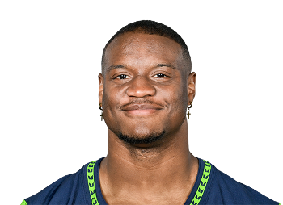

BALL KEEP
40 boards · Superflex · PPR · Sleeper
Player File · RB KC

Kenneth Walker III
RB · KC · 25 · Michigan State
2026 · through Week 6
Counting stats
Yearly
| Year | G | Snap % | Touches | Tgt | Rec | Yds | TD | Rush | RuYd | ReYd | PPR |
|---|---|---|---|---|---|---|---|---|---|---|---|
| 2026 | 5 | 74.8% | 120 | 22 | 14 | 760 | 8 | 106 | 665 | 95 | 138.0 |
| 2025 | 17 | 46.8% | 252 | 36 | 31 | 1,309 | 5 | 221 | 1,027 | 282 | 191.9 |
| 2024 | 11 | 63.7% | 199 | 53 | 46 | 872 | 8 | 153 | 573 | 299 | 181.2 |
| 2023 | 15 | 54.5% | 248 | 37 | 29 | 1,164 | 9 | 219 | 905 | 259 | 199.4 |
Game by game · 2026
| Wk | Opp | Snap % | Touches | Tgt | Rec | Yds | TD | Rush | RuYd | ReYd | PPR |
|---|---|---|---|---|---|---|---|---|---|---|---|
| 1 | vs DEN | 68.1% | 26 | 6 | 3 | 191 | 2 | 23 | 173 | 18 | 34.1 |
| 2 | vs IND | 82.5% | 30 | 10 | 6 | 178 | 0 | 24 | 117 | 61 | 23.8 |
| 3 | @ MIA | 73.1% | 20 | 2 | 2 | 73 | 2 | 18 | 70 | 3 | 21.3 |
| 4 | @ LV | 75.0% | 23 | 1 | 1 | 179 | 2 | 22 | 177 | 2 | 30.9 |
| 5 | BYE | - | - | - | - | - | - | - | - | - | - |
| 6 | vs LAC | 73.8% | 21 | 3 | 2 | 139 | 2 | 19 | 128 | 11 | 27.9 |
| Total | 74.8% | 120 | 22 | 14 | 760 | 8 | 106 | 665 | 95 | 138.0 |
Regular-season line from Sleeper. Touches are carries plus catches. Yards are rushing plus receiving. Snap % is offensive snaps divided by team offensive snaps.
The tape
Kenneth Walker III is another redraft-vs-dynasty split. Yates has him 15th in PPR. Our standard board has him 12th. The Keep has him 44th. The 164-yard game against the Rams is the redraft exhibit: burst, enough power, a back who can finish a drive. Win-now managers should be thrilled.
Dynasty managers have watched too many 25-27-year-old backs fall off a cliff to pay 2024 prices. Keep #44 is 'useful if you are contending, not a building block.' If your Superflex roster is a 2026-27 title window, Walker is a fine RB2. If it is a rebuild, he is a sell to the CMC/Henry owner who needs a second hammer.
Plus
- Yates PPR 15th / our STD 12th - 2025 usage still looks like an RB1 in redraft.
- Chiefs landing spot (on our boards) is a win-now offense if the touches are real.
- Hot #6: The feature in a 4-0 club off a bye. Herbert is 0-5. Rooms that still have him as a Seahawks memory will sell the year cheap. - Sporting News
Minus
- Keep #44 - dynasty age/mileage plus committee risk is why Superflex has moved on.
- Kansas City's backfield can become a timeshare without warning.
Board graph
Spread 9-50 · 37 sources
Every Board
Spread 9-50 · 37 sources
| Source | Rank |
|---|---|
| KeepTradeCut SF | 9 |
| CBS Sports | 14 |
| Fantasy Alarm | 14 |
| RotoGrinders Superflex | 14 |
| Draft Sharks | 16 |
| Dynasty Trade Calculator | 17 |
| Dynasty Nerds | 19 |
| FantasyPros ECR | 23 |
| Fantasy Footballers | 23 |
| The Athletic | 23 |
| Yahoo Fantasy | 23 |
| Rotoworld | 23 |
| Establish The Run | 23 |
| Sleeper Superflex | 23 |
| Underdog ADP | 23 |
| Footballguys | 23 |
| 4for4 | 23 |
| numberFire | 23 |
| PlayerProfiler | 23 |
| FFToday | 23 |
| Contender board | 23 |
| Rebuild board | 23 |
| DLF ADP mix | 23 |
| RotoBaller Dynasty | 23 |
| Sports Illustrated Dynasty | 23 |
| FantasyData Superflex | 23 |
| Pro Football Reference | 23 |
| Fantasy Life | 27 |
| Fantasy Points Superflex | 27 |
| DLF Superflex | 28 |
| WalterFootball | 28 |
| Superflex market mash | 28 |
| PFF Dynasty | 30 |
| Mike Clay (ESPN) | 31 |
| PFN (Katz/Soppe) | 44 |
| ESPN (Karabell) | 50 |
| RotoWire | 50 |
Tape · 2025 season
Kenneth Walker III's Best Plays From 164-Yard Game vs. Rams | 2025 Week 16
BK News
- Will Patrick Mahomes play against the Las Vegas Raiders today? Latest injury update on the Kansas City Ch
- Josh Simmons told by Andy Reid, Patrick Mahomes to leave Chiefs meeting for a ridiculous reason
- Aaron Rodgers, Kenneth Walker III address Eagles' handling of Jalen Hurts blood clot situation: 'That's crazy'
- Kenneth Walker III is thriving with Chiefs. Why did the Seahawks let him go?
- Mike Macdonald discusses Kenneth Walker III ahead of RB's return to Seattle in Week 7 | 'NFL Total Access'
- Patriots’ TreVeyon Henderson Gets Kenneth Walker Advice as Struggles Persist
All player pages · The Keep · The Board · Recent deals · Hot 'n' Cold · BK News · Trade calculator